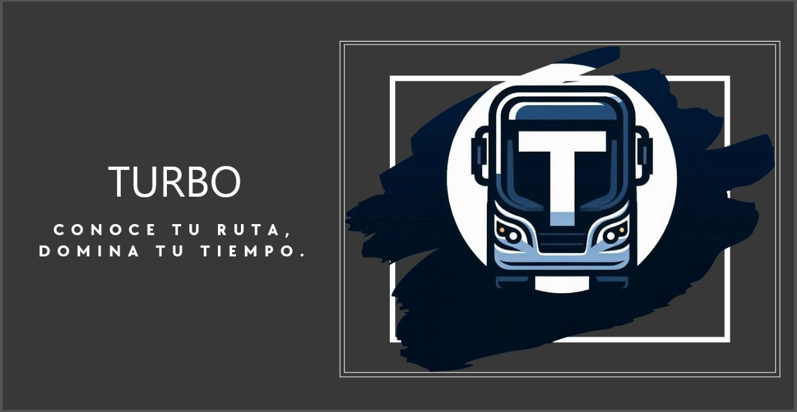

Rutas Detalladas
Encuentra de manera sencilla las rutas que necesitas. Turbo te proporciona un desglose visual claro y detallado de las líneas de autobuses, para que siempre sepas qué camino tomar.

La app que revoluciona el transporte público
Turbo es tu solución confiable para navegar por el transporte público de tu ciudad. Con herramientas innovadoras y datos en tiempo real, hacemos que cada trayecto sea más fácil y eficiente.
Encuentra de manera sencilla las rutas que necesitas. Turbo te proporciona un desglose visual claro y detallado de las líneas de autobuses, para que siempre sepas qué camino tomar.
Visualiza en tiempo real dónde se encuentran los autobuses en tu ciudad. La precisión de Turbo garantiza que siempre tengas la información más actualizada, para que nunca pierdas tu viaje.

No más incertidumbre en la parada. Turbo calcula cuánto tiempo falta para que tu autobús llegue, asegurándose de que aproveches al máximo tu tiempo.

Recibe alertas instantáneas sobre cambios en las rutas, retrasos o interrupciones. Con Turbo, siempre estarás informado y preparado para cualquier eventualidad.